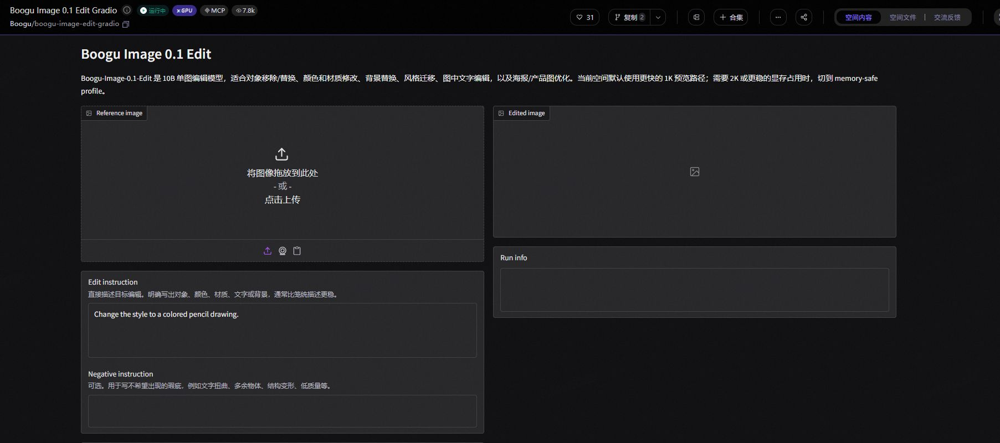

P25-modelscope-o1 · 官方机制
ModelScope SDK提供资源获取与任务调用；Hub工具列上传、下载、缓存和修订能力。
未标整页更新日；部分数量与示例为历史内容 · 观察：2026-09-09
复用旧正文记录，未运行。
魔搭的公开用户记录主要涉及下载模型或数据开展本地实验，以及将应用部署为创空间。样本中也有希望加快下载的新手。职业分布和任务完成率未知；仓库开放、资源免费或日志显示部署成功，均不足以证明最终可用。
| 内容使用者 | 内容供给者 | 付款方 |
|---|---|---|
| 下载模型与数据、尝试加载或调用的人；包括自述新手，职业分布未知。 | 上传资源、部署与维护创空间的人；同一人可能反复提交多个问题。 | 生态合作方的资源投入可见；普通使用者有免费部署自述，没有社区付费金额。 |
3位不同公开提交者，分别关注下载续传、数据加载、文件大小。 · 有用户线索，候选画像
| 观察点 | 群体占比 |
|---|---|
| 3个可区分用户点 | 未知 |
| 问题 | 具体材料 |
|---|---|
| 任务 | 取得正确、完整且可加载的资源，再进入自己的实验。 |
| 触发 | 准备新模型，或现有下载/加载中断。 |
| 希望取得的结果 | 资源可用，环境兼容，能判断下载是否完整。 |
| 困难 | 网络中断后的续传失败。；数据脚本与依赖版本不匹配。；页面、API与实际文件大小不一致。 |
| 需要的内容 | 资源版本、文件清单、完整性与加载条件，依赖兼容和已验证替代办法。 |
| 替代方法 | 直接使用其他数据加载器或模型源；一名新手考虑绕开魔搭但仍偏好其下载速度。 |
| 持续使用记录 | 有具体下载与加载尝试；没有后续实验完成或长期回访数据。 |
| 回访假设 | 新模型或数据需求，以及旧实验重跑带来回访。 |
| 付费记录 | 资料不足；工具使用与下载不等于购买云服务。 |
2位不同提交者、3条观察；匿名D两次反馈合并为1人。 · 有用户线索，候选画像
| 观察点 | 群体占比 |
|---|---|
| 2个可区分用户点 | 未知 |
| 问题 | 具体材料 |
|---|---|
| 任务 | 把小模型或应用部署到可访问状态，并看日志处理失败。 |
| 触发 | 新部署、重新构建或应用状态异常。 |
| 希望取得的结果 | 应用正常运行，出问题时能重启、删除或定位。 |
| 困难 | 部署中状态长时间不结束。；运行提示与页面状态不一致。；重新部署时构建日志缺失。 |
| 需要的内容 | 部署前提、资源边界、可见日志与恢复操作说明。 |
| 替代方法 | 本地部署或其他托管平台；没有确认迁移结果。 |
| 持续使用记录 | 匿名D在8月12日和31日反馈创空间问题，是短期重复维护行为；不能作为长期留存。 |
| 回访假设 | 已有应用的更新和故障迫使作者持续维护。 |
| 付费记录 | 匿名E明确使用免费资源；其他付费情况未知。 |
AMD联合项目的官方合作角色；0个独立买方观察。 · 官方合作定位，候选画像
| 观察点 | 群体占比 |
|---|---|
| 0个可区分用户点 | 未知 |
| 问题 | 具体材料 |
|---|---|
| 任务 | 通过教程、Notebook和应用贡献扩展硬件与工具链使用。 |
| 触发 | 需要开发者体验、适配和案例。 |
| 希望取得的结果 | 可以复用的实践材料及反馈。 |
| 困难 | 内容贡献数量不能证明采用。；资源激励与真实投入、效果之间缺数据。 |
| 需要的内容 | 可执行课题、环境说明、验收与维护责任。 |
| 替代方法 | 自办开发者计划或其他社区合作；为分析。 |
| 持续使用记录 | 只有联合项目规则；作者持续参与和伙伴续约未知。 |
| 回访假设 | 持续产出可采用案例可能支持合作继续。 |
| 付费记录 | 资源支持可确认，现金交易与收入归属未知。 |
| 产品提供 | 内容形态 | 如何发挥作用 | 观察结果 | 剩余工作 |
|---|---|---|---|---|
| 模型/数据仓库与下载、缓存、版本工具。 | 权重、数据、资源说明与SDK。 | 把发现、获取和加载接在同一工具链上。 | 3位成员进入实际获取/检查，但分别遇到续传、兼容和元数据问题。 | 没有确认训练、推理或业务结果；Closed也不能代替复验。 |
获取与加载阶段
| 产品提供 | 内容形态 | 如何发挥作用 | 观察结果 | 剩余工作 |
|---|---|---|---|---|
| 创空间部署及运行资源。 | 可体验的应用和独立仓库配置。 | 作者配置环境，平台提供托管和日志。 | 免费部署样本自述48小时仍在部署；另一维护者能看到结束后的运行日志但缺构建过程日志。 | 可访问应用、故障恢复与持续稳定性未核。 |
部署尝试，部分受阻
| 产品提供 | 内容形态 | 如何发挥作用 | 观察结果 | 剩余工作 |
|---|---|---|---|---|
| 带范围分类的公开issue。 | 错误、环境和复现模板。 | 让使用者陈述条件并交给相关维护者。 | 可查到症状和请求；部分模板仍有占位，不能直接复现。 | 处理时限、修复关联和原使用者成功率未知。 |
反馈收集/定位线索
| 产品提供 | 内容形态 | 如何发挥作用 | 观察结果 | 剩余工作 |
|---|---|---|---|---|
| 联合开发者激励中的文章、Notebook、应用贡献任务。 | 合作课题与资源激励。 | 围绕可提交产物组织参与。 | 只确认规则和方向。 | 完成质量、奖励实际发放与企业回报未知。 |
官方机制
ModelScope SDK提供资源获取与任务调用；Hub工具列上传、下载、缓存和修订能力。
未标整页更新日；部分数量与示例为历史内容 · 观察：2026-09-09
复用旧正文记录，未运行。
modelscope_hub文档描述Studio环境、SDK和可见性；公开应用可与隐藏源码分离。
发布记录含2026-09-01 v0.4.0 · 观察：2026-09-09
客户端能力不是网站操作实测。
AMD联合开发者计划按文章、Notebook及应用组织贡献和资源支持。
页面报名截至 2026-12-31，未标发布日 · 观察：2026-09-09
规则不代表实际完成与现金交易。
匿名A在Windows环境下载模型中断后重跑报错。
2026-04-01 · 观察：2026-09-10
读正文及Closed状态，未取得修复和复验，不保存个人路径。
匿名B自称新手，只想用魔搭下载IMDB数据；加载报错后考虑替代加载器或降级，但希望当前版本解决。
2026-08-06 · 观察：2026-09-10
错误原因部分来自发帖者引用大模型回答；不当独立技术诊断。
匿名C对照数据仓库网页、API和实际文件，报告大小显示不一致。
2026-08-06 · 观察：2026-09-10
单例检查，未下载核实或推算所有仓库。
匿名D报告创空间重新部署时刷新后仍无构建日志，但构建结束后运行日志可看。
2026-08-12 · 观察：2026-09-10
环境模板不完整；与#1786同作者合并1人。
匿名E称用免费资源部署小模型，48小时仍在部署且无法重启或删除，请求后台协助。
2026-08-14 · 观察：2026-09-10
原帖含联系方式，报告不转存；未见恢复结果。
匿名D在后续题名报告创空间部署失败而日志提示运行成功。
2026-08-31 · 观察：2026-09-10
正文主要为未填模板，只支持持续问题反馈线索，不证明故障原因。
ModelScope · 未标整页更新日；部分数量与示例为历史内容 · 查阅：2026-09-09
读取既有研究证据；原访问2026-09-09，未重新操作。复用旧正文记录，未运行。
ModelScope · 发布记录含2026-09-01 v0.4.0 · 查阅：2026-09-09
读取既有研究证据；原访问2026-09-09，未重新操作。客户端能力不是网站操作实测。
ModelScope / AMD · 页面报名截至 2026-12-31，未标发布日 · 查阅：2026-09-09
读取既有研究证据；原访问2026-09-09，未重新操作。规则不代表实际完成与现金交易。
公开议题参与者（匿名） · 2026-04-01 · 查阅：2026-09-10
2026-09-10实际访问层级：正文已读。读正文及Closed状态，未取得修复和复验，不保存个人路径。
公开议题参与者（匿名） · 2026-08-06 · 查阅：2026-09-10
2026-09-10实际访问层级：正文已读。错误原因部分来自发帖者引用大模型回答；不当独立技术诊断。
公开议题参与者（匿名） · 2026-08-06 · 查阅：2026-09-10
2026-09-10实际访问层级：正文已读。单例检查，未下载核实或推算所有仓库。
公开议题参与者（匿名） · 2026-08-12 · 查阅：2026-09-10
2026-09-10实际访问层级：正文已读。环境模板不完整；与#1786同作者合并1人。
公开议题参与者（匿名） · 2026-08-14 · 查阅：2026-09-10
2026-09-10实际访问层级：正文已读。原帖含联系方式，报告不转存；未见恢复结果。
公开议题参与者（匿名） · 2026-08-31 · 查阅：2026-09-10
2026-09-10实际访问层级：标题与正文已读，正文含未补齐模板。正文主要为未填模板，只支持持续问题反馈线索，不证明故障原因。
魔搭的代码示例说明调用，版本文件保存资产，训练样例提供操作材料，问题记录保留失败条件。模型名称和封面帮助发现资源，实际使用仍需这些材料。
围绕一种任务的最小调用代码与结果说明。
| 样例 | 可以取得什么 | 后续动作 | 条件与限制 |
|---|---|---|---|
| 官方 SDK README 的人像抠图示例。 | 可执行代码示例，未在运行。 | 按文档准备环境后尝试自己的输入。 | 最小示例没有覆盖所有输入质量、成本和异常处理。 |
归属明确、可以按路径和版本定位的资源文件。
| 样例 | 可以取得什么 | 后续动作 | 条件与限制 |
|---|---|---|---|
| Hub SDK 创建仓库与上传下载接口说明。 | 可取得的资产及管理参数，属于客户端文档。 | 有权限时按路径或修订获取文件；没有下载。 | 字段可以声明不等于材料许可已获核实；不能当成网站表单实测。 |
说明数据如何接入训练过程的一段示例。
| 样例 | 可以取得什么 | 后续动作 | 条件与限制 |
|---|---|---|---|
| SDK README 的中文诗歌相关训练示例。 | 开发过程示例，不是普通用户可以直接发布的内容成品。 | 开发者研究数据适配与训练调用方式。 | 未训练或评价效果，也未核示例数据的具体再使用许可。 |
一次使用障碍的描述、环境材料和后续讨论。
| 样例 | 可以取得什么 | 后续动作 | 条件与限制 |
|---|---|---|---|
| #1661 中断下载后失败报告。 | 讨论证据；不等于已经写好的解决教程。 | 可对照症状并补充复现信息；没有核验可用修复步骤。 | 模板字段可能未填，该例复现命令保留占位。 |
SDK README 的教学代码，选择它是因为输入、处理和输出可识别；未运行或检查图像质量。
| 材料部分 | 观察到什么 | 作用分析 |
|---|---|---|
| 输入样例 | 示例提供一张图像的地址作为调用输入。 | 分析：读者知道需要准备的是图像，而非从展示图反猜输入。 |
| 处理任务 | 用 portrait-matting 任务创建 pipeline 并调用。 | 分析：把能力名称连接到实际使用入口。 |
| 输出字段 | 从结果中读取 output_img。 | 分析：说明程序返回什么，便于区分成功返回与展示步骤。 |
| 结果保存 | 代码将返回图像写成 result.png。 | 分析：给出一个可检查的结果位置，但不证明背景处理质量。 |
一个官方示例不能证明全站模型有同样完整的说明或可用性。
| 可取得或继承 | 还需准备 | 不能直接迁移 |
|---|---|---|
| 可参考官方调用代码；Hub 工具支持按文件与修订获取资源，使所用资产更容易定位。 | 需要匹配环境、网络和运行资源，准备输入并检查资源权限与许可；实际条件随模型而变。 | 模型仓库文件不自动带走完整训练环境、数据权利和维护者支持；Studio 操作说明也不能当成无限免费算力承诺。 |
魔搭用SDK说明调用方式，用Hub工具管理文件和版本，以公开问题页处理失败反馈。除资源收录外，还需要持续维护有效版本、依赖说明和问题处理入口。
官方 SDK 提供模型接入与按任务调用的说明，并保留模型、数据及训练示例。
| 执行与分工 | 触发与节奏 | 运营作用（分析） | 失效条件 |
|---|---|---|---|
| 资源贡献者提供模型材料；SDK 维护者支持接入方式。 | 由新增资源、适配需求和版本变化触发，接入审核时限未披露。 | 分析：一致入口可以减少逐模型摸索，但需要作者持续适配。 | 有调用接口不代表所有资源都达到同一质量或完整程度。 |
SDK README 以任务示例演示载入、处理输入和保存输出。
| 执行与分工 | 触发与节奏 | 运营作用（分析） | 失效条件 |
|---|---|---|---|
| 文档作者提供最小路径，使用者准备自己的环境与输入。 | 开发者开始新任务时使用，示例是否随版本复测未知。 | 分析：把了解能力推进到一次能检查的处理。 | 只读示例，不能声称已经下载或运行成功。 |
Hub SDK 文档提供仓库、上传下载、修订版本及缓存处理能力。
| 执行与分工 | 触发与节奏 | 运营作用（分析） | 失效条件 |
|---|---|---|---|
| 资源作者维护仓库内容，客户端维护者处理传输和兼容问题。 | 发布文件、指定修订或遇到下载失败时触发。 | 分析：问题定位必须落到资源与版本，不能只写模型名称。 | 客户端能力不等于当前网站所有页面都提供同样操作。 |
#1661 的问题模板列出模型、Hub、数据与训练等排查方向；页面可见 bug 标签与负责人信息。
| 执行与分工 | 触发与节奏 | 运营作用（分析） | 失效条件 |
|---|---|---|---|
| 用户提交故障条件；项目维护者按职责范围接续，具体处理过程未完整取得。 | 由失败报告触发；响应与解决时限未知。 | 分析：分清资源问题和工具问题，才能把反馈交给能修改的人。 | 该例的复现命令仍留模板占位，没有取得修复后的复验。 |
Hub SDK 发布记录包含功能更新及登录、下载等问题处理条目。
| 执行与分工 | 触发与节奏 | 运营作用（分析） | 失效条件 |
|---|---|---|---|
| 工具维护者发布更新，使用者选择适用版本并重新验证自己的任务。 | 按公开版本记录发生，不推定固定发版周期。 | 分析：后续返回可以来自同一任务的新版本需求，不只是浏览新模型。 | 更新存在不证明具体投诉已解决，更不能证明用户留存。 |
ModelScope #1661，2026-04-01 创建的单个用户报告；未独立复现。
分析：下一步需补实际命令、对应版本与最小复现，再判断由下载工具还是资源维护者处理；这是待完成核验，不是假定已有处理。
未取得明确修复关联或复验，不据单例推定全站故障率。
| 供给者回报 | 参与者回报 | 与付费的连接 |
|---|---|---|
| 平台合作报告自述通过开放资源和生态支持吸引贡献者；普通作者的直接报酬规则资料不足。 | 统一工具和公开问题记录可降低学习与排查成本，实际节省多少未核。 | 非营利生态定位与企业基础设施合作不能直接当成社区收入；没有补足付费转化。 |
| 持续工作 | 尚未量化的成本 | 成立条件 |
|---|---|---|
| 接入适配、示例更新、下载与缓存兼容、问题分类和版本说明。 | 分析：一个失败报告可能跨模型、数据、SDK 与使用环境，需要先重建条件才能分工。 | 资源作者与基础工具维护者能够协作，且问题含有足够复现材料。 |
魔搭由企业与技术机构共同提供模型、数据、工具和部分免费算力，公开报告强调开放、中立与非营利运营。它可以提供模型与作者线索，也与付费工具竞争；社区收入不能由相邻云业务推算。
| 付款方 | 收入方式 |
|---|---|
| 社区用户可获得开放资源和部分免费算力；合作企业、机构提供生态资源。付费部署或模型服务可能在云平台等相邻业务完成，但社区与这些业务之间的实际收入归属、转化和预算均未公开。 | 社区以开放供给和资源支持促进模型使用、开发实践及企业生态；相邻云服务商业化，社区独立营收资料不足。 |
事实：2026 年 4 月以 ModelScope 为署名方、由世界互联网大会发布的报告将魔搭描述为开放、中立、非营利的社区，建设方包括 CCF 相关技术委员会与阿里巴巴。判断：模型被发现、测试、适配并用于应用，本身能为技术生态创造价值，但不自动形成社区直接收入。
官方xGPU文档的搜索索引提到向创空间开发者提供免费GPU资源，但未取得完整正文；具体权益、适用条件和额度仍待核。判断：免费实践资源可能降低试用门槛，不过在取得现行完整规则前，不能据此与多元拾光价格作定量比较，也不能将索引摘要当作可兑现的权益承诺。
事实：AMD 与魔搭联合激励计划列出研习社文章、Notebook 和创空间应用三条参与路径，优质实践可以获得算力资源。判断：这种激励购买的是可使用的内容、应用和技术反馈，而不仅是签到。活动公布的资源上限不等于已实际发放，也不等于社区获得同额现金。
事实：阿里云 Model Studio 有按模型和用量收费的独立价格文档；魔搭公开资源体系与云商业服务不能合并。合理推断：开发者从社区试验走向规模使用后，可能购买云算力或模型服务，但未得到归因数据，不能称魔搭已验证某个社区到云收入的转化率。
| 指标 | 披露值 | 期间与对象 | 解释 | 限制 |
|---|---|---|---|---|
| 全球用户 | 超过 2,500 万 | 截至 2026 年 3 月；报告于 2026 年 4 月发布；ModelScope 社区 | 署名报告披露的平台用户覆盖规模。 | 未明确是注册、累计访问还是其他去重口径，不能标成月活；属于平台自述而非独立审计。 |
| 供给组织与模型 | 超过 1,000 家贡献机构；超过 17 万个模型 | 2026 年 4 月报告；报告中所述 ModelScope 生态 | 体现机构和个人共同提供资源的规模。 | 机构不是付费企业，模型仓库数不是活跃模型数，也不是有效创作者人数。 |
| 社区经营规模 | 未公开核实 | 截至 2026-09-09；社区直接收入、云服务转化收入、月活及算力成本 | 无法给出社区利润、付费率或每用户贡献。 | 阿里云整体收入、Qwen 使用量、免费 GPU 时数均不能填补此缺口。 |
ModelScope / 世界互联网大会智库合作计划 · 2026-04 · 查阅：2026-09-09
PDF 第 3 页简介及第 22 页明确 2026 年 3 月用户口径；规模为社区自述。
ModelScope · 未标注（动态文档） · 查阅：2026-09-09
官方文档索引可读到免费 xGPU 说明，直接打开正文为空；只使用索引明确内容，不延伸配额和条件。
ModelScope / AMD · 页面报名截至 2026-12-31，未标发布日 · 查阅：2026-09-09
文章、Notebook、应用贡献与算力激励；不把上限当实际发放。
Alibaba Cloud · 2026-09-07 · 查阅：2026-09-09
只证明相邻商业模型服务存在，不作魔搭社区收入证据。
已登录，打开运行中的图片编辑创空间和公开 README，检查参考图、参数与复制入口；未上传、复制、运行或创建资源。

页面同时展示输入图、编辑指令、输出与运行信息，上方另有复制、文件和交流反馈。
运行状态与复制按钮不证明用户已成功运行或复制；没有提交。
来源页面 ↗只读检查一个图片编辑创空间与 README。
完成应用和代码说明之间的条件核查。模型资源可找到，不等于图片任务已完成；不同创空间的输入和算力要求需要单独看。
已接收生成任务0次。只读查看；未上传、复制、运行或创建资源。
| 阶段 | 用户动作 | 可能遇到的障碍 |
|---|---|---|
| 发现与进入 | 由模型首发、教程、MCP 实践或活动进入。 | 不同入口吸引的技术能力和任务不同。 |
| 第一次做成 | 跑示例，再替换自己的材料与环境。 | 示例成功可能依赖作者预先准备的配置。 |
| 再次使用 | 继续实验、部署应用，或回到具体问题。 | 资源使用是否持续，与社区答疑是否有帮助要分开。 |
| 贡献给别人 | 提交代码、说明、测试和实践记录。 | 只有宣传文章而没有完整交接材料，会把排错成本留给接手者。 |
图片编辑表单在结果区旁明确要求先有参考图，运行信息另设区域；顶部的“运行中”只能说明服务状态。用户能试用一个展示应用，与能复制并维持自己的应用，是两项不同能力。
资源、应用和服务目录需要分别回答“拿到什么”和“怎样接入”。项目说明中的依赖、示例输入与部署条件，比统一一张漂亮封面更能减少判断失误。
部分动态页曾只返回空壳，以实际浏览器截图补充；未运行的应用不评价成功率。
2026 年更新的新手文档连接模型下载、实验、训练及上传分享；Notebook 与创空间让内容可以带运行环境。它既有技术学习，也有模型和应用资产。
这种组织结构帮助开发者从阅读走向实验。对非技术创作者，模型和环境概念仍有门槛，因此不能直接拿它的用户路径设计 MakeNow 新手首页。
阿里巴巴 2022 年发布材料说明，魔搭上线时已经带着多年研发积累的模型资源。这样的起点包含团队技术、机构信誉与供给，不能概括为搭好社区等用户上传。
机构合作和活动可带来高质量内容，但多元拾光几乎没有客户与作者资源，应先选择一种自己能承担的小任务，避免模仿大平台全生态叙事。
当前技术征文相关说明强调方法、文件、问题解决、比较与可复现性，官方质量评审的权重高于浏览和社交表现。这提供了一种值得研究的内容选择逻辑。
历史贡献勋章以贡献类别安排资源和合作权益，但所读第五期权益已经到期；不应把旧获奖资源视为现在都可申请。
xGPU 有试用和资源生命周期条件，旧活动的免费 GPU 数额不能当作当前全员权益。历史共享应用教程甚至提醒读者复制到自己空间，以免共享写入影响其他人。
可访问项目页面不等于项目正在运行；引用旧演示浏览量也不能证明当前可用。复制说明必须告诉使用者需要什么数据、环境和独立配置。
持续实验和维护会使开发者回来查资源、解决问题或跟进更新；但公开活动参与并不直接证明常态互助。多元拾光 API 方向可以试用“一个真实应用 + 参数选择 + 故障复盘”的内容单位。
MakeNow 方向则可以截取可复现的评审标准：同一个新素材是否跑通、失败是否有解释。暂不建设技术论文、训练和产业对接全栈社区。
Production AI Skills 活动要求代码、文档、测试用例和跑通记录，并把真实场景、稳定性、可维护性纳入评分。报名截止为 2026 年 8 月 31 日，页面仍显示“进行中”；本报告按已过报名截止处理。
MCP 大本营把教程、实践、贡献和答疑集中展示。这是入口组织方式；公开资料没有披露这些答疑长期由谁承担、耗费多少工时。
| 做法 | 依据 | 投入 | 调整条件 |
|---|---|---|---|
| 运营从连续项目和过程记录找作者，采购一份方法和第二人复现所需的材料。 | 作者已经做成过，能减少从空白同时找题、做工具和写教程的风险。 | 产品验收结果是否可用；研发检查交接失败；作者报价应包括一次修订和有限维护。 | 新用户换自己的材料仍能完成，并且支持成本在排期内，再增加作者。 |
| 做法 | 依据 | 投入 | 调整条件 |
|---|---|---|---|
| 先完成一对一交接，不承诺 GPU、训练或长期应用托管。 | 征集增加审核、环境检查和答疑工作，需与主营工具维护共用研发及运营工时。 | 案例增加较慢，但可以看清每份案例真正需要多少支持。 | 已有多位作者可以按统一要求交付、运营能独立完成初审，才考虑小范围公开征集。 |
官方 · 更新 2026-07-02
运行与上传路径；索引可读、直开空壳
官方 · 未标更新日
资源与试用条件
官方 · 更新 2026-07-10；权益至 08-06
已结束的贡献支持
官方 · 访问 2026-09-08；精确发布日期未核
质量、可复现与传播评审；索引读取
官方集团发布 · 2022-11-03
模型积累与上线历史
平台社区教程 · 约 2025；精确日期未核
共享与独立空间的使用边界
官方 · 旧项目；当前运行未测
页面存在不等于可运行
官方 · 报名截止 2026-08-31；访问 2026-09-09
交付与评分要求；状态文案与截止日期冲突
官方 · 未标更新时间；访问 2026-09-09
教程、贡献与答疑入口；动态页与索引结合读取